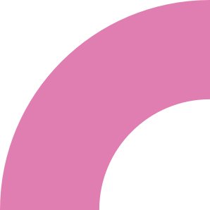
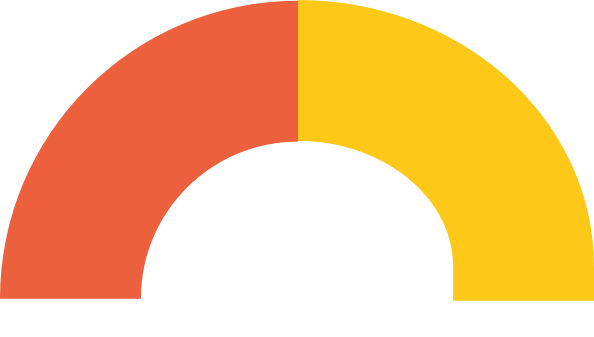
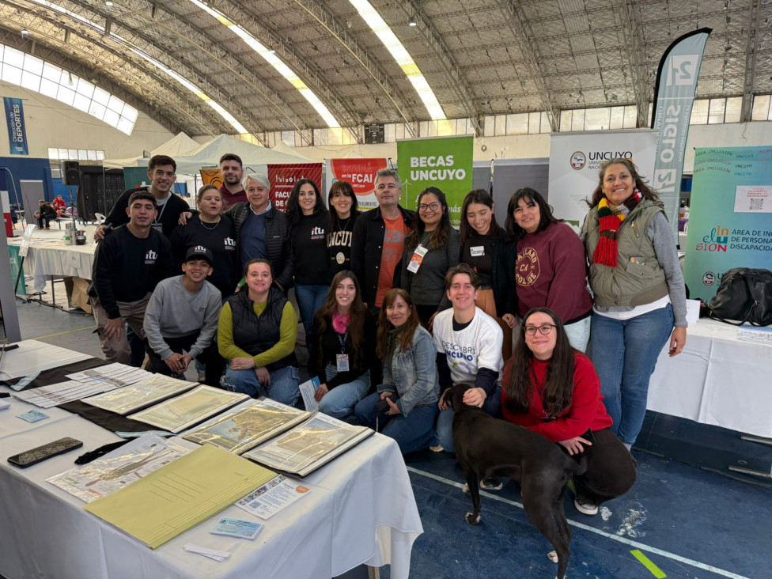

No conocen toda la oferta académica.
POLÍTICA INSTITUCIONAL DE LA UNIVERSIDAD NACIONAL DE CUYO

Acercar la Universidad también es construir un puente.
Una política institucional que amplía oportunidades, articula territorios y acompaña el encuentro con la Universidad pública.
01 Preguntar02 Comprender03 Recorrer04 Construir juntos

UNA PREGUNTA PARA EMPEZAR
¿Qué significa hoy “acercar” la Universidad a quienes todavía no llegaron a ella?
Respondé desde tu celular y sumá tu palabra a la construcción colectiva.
Participar en Mentimeteraccesoigualdadacompañamientoterritorioinclusiónvocaciónarticulacióninformaciónpermanencia
¿POR QUÉ EXISTE DESCUBRÍ UNCUYO?
Hay estudiantes que todavía ven la Universidad desde lejos.
Descubrí UNCUYO existe para reducir esas barreras.
RESOLUCIÓN RECTORAL N.º 1926/2026
De una iniciativa valiosa a una política académica sostenida.
La formalización garantiza continuidad, consolidación, mejora permanente y articulación con las Unidades Académicas.
Promueve el acceso a la educación superior y reduce barreras sociales, económicas, territoriales e informativas.
Conecta Universidad, instituciones educativas, municipios y comunidad.
Integra dispositivos presenciales y virtuales, con evaluación y mejora permanente.
UN PROGRAMA, CUATRO DISPOSITIVOS
Distintas formas de construir el puente.
Cada dispositivo responde a una barrera y todos se potencian cuando funcionan como sistema.
EL ANCLAJE DIGITAL DEL PROGRAMA
Una puerta de entrada disponible todo el año.
El portal reúne la experiencia universitaria en un solo lugar y articula la información de todas las Unidades Académicas.
Abrir el sitio webINGRESO · UNCUYO
Todo lo que necesitás para acercarte a la Universidad.
Información clara, actualizada y accesible para explorar de manera autónoma.
Más de 140 carrerasFechas de ingresoBecas y serviciosKit UNCUYOOrientación vocacional

UN RECORRIDO ARTICULADO
Informar. Recibir. Recorrer. Acompañar. Permanecer.
Un puente se sostiene con acciones que se conectan antes, durante y después del ingreso.

QUÉ DICEN LOS DATOS
El alcance se construye persona a persona y territorio a territorio.
Los primeros recorridos ya muestran la escala de una política que sale al encuentro.
VOCES DEL RECORRIDO
Las experiencias explican lo que los números no muestran.
“¿Qué cambió en su manera de imaginar la Universidad?
“¿Qué hizo posible el encuentro con el Programa?
GUÍA INTERACTIVA DE CARRERAS
La oferta académica también necesita recorridos simples.
Familias de carreras, Facultades e Institutos, duración y enlaces oficiales en un solo recorrido.
Explorar la Guía de CarrerasFamilias→Facultades→Carreras
UNA POLÍTICA DE TODA LA UNIVERSIDAD
Cada Unidad Académica tiene un rol estratégico.
Oferta actualizadaReferentes de ingresoExperiencias de acercamientoAcompañamiento de trayectorias
El Programa se consolida cuando toda la Universidad se reconoce en él.
CONSTRUCCIÓN COLECTIVA
¿Qué podría aportar su Facultad para fortalecer Descubrí UNCUYO durante 2027?
1. Pensar2. Escribir tres ideas3. Compartir
Al inicio preguntamos qué significa acercar la Universidad.
 @descubriuncuyo
@descubriuncuyo Canal de WhatsApp
Canal de WhatsApp